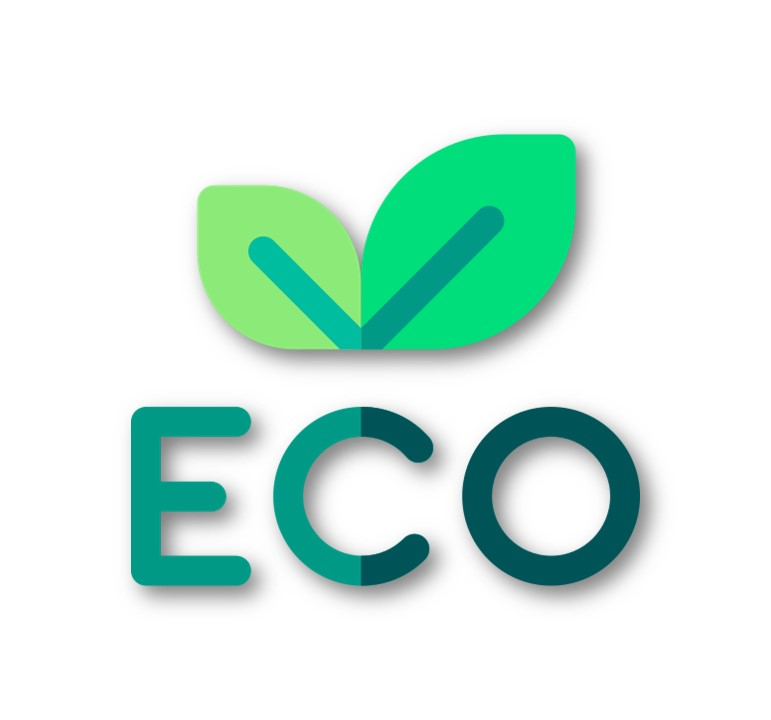

Quem Somos
Somos um grupo que por meio de um projeto acadêmico tivemos a ideia de de formatar um guia sustentável para descarte correto de lixos eletrônicos, visto que a reciclagem destes itens é essencial para minimizar seu impacto negativo no meio ambiente e na saúde pública.
O ECORoute surge como uma resposta concreta a esse desafio, oferecendo uma plataforma acessível e intuitiva para mitigar esses impactos facilitando o descarte responsável e a reciclagem desses resíduos.
